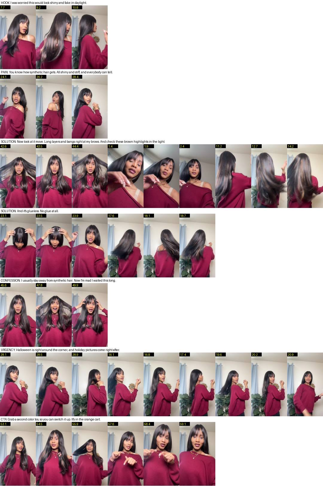
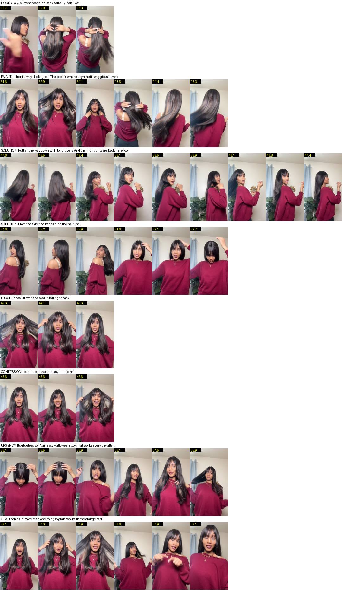
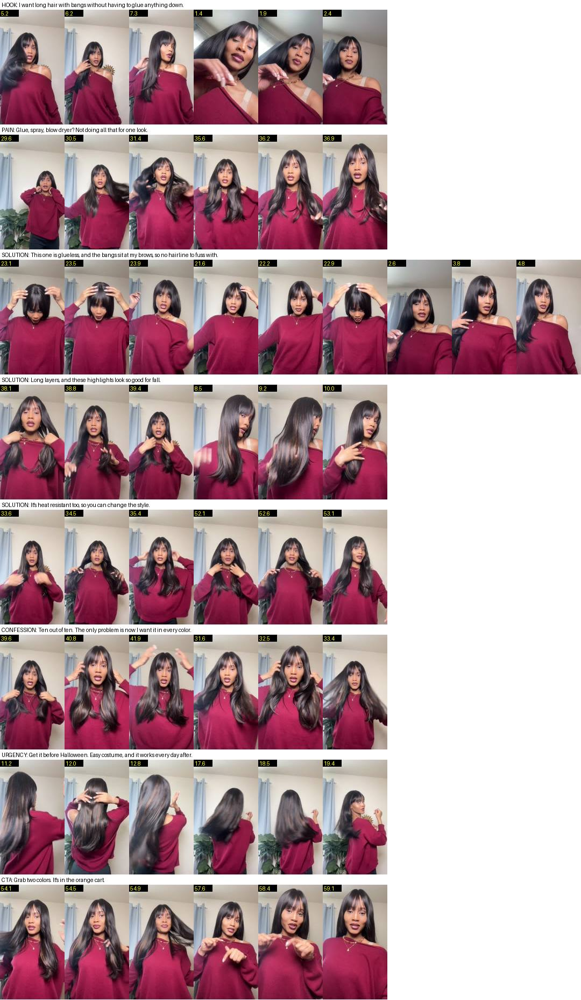

<title>Synthetic Wig Shot Check</title>
<meta name="claude:viewport-fit-sides" content="cover">
<link rel="stylesheet" href="https://fonts.googleapis.com/css2?family=Fraunces:opsz,wght@9..144,600&family=Source+Sans+3:wght@400;600&display=swap">
<style>
/* layout: one narrow column, a frame sheet per script, notes above each */
:root{--bg:#faf6f6;--fg:#2a1d20;--muted:#6f5c60;--line:#e8dcdd;--accent:#8c1f3a;--card:#fff;
 --display:"Fraunces",Georgia,serif;--body:"Source Sans 3","Segoe UI",system-ui,sans-serif}
@media (prefers-color-scheme:dark){:root:not([data-theme="light"]){--bg:#181214;--fg:#f2e9ea;--muted:#b8a5a9;--line:#3a2c30;--accent:#e58aa2;--card:#221a1c;color-scheme:dark}}
:root[data-theme="dark"]{--bg:#181214;--fg:#f2e9ea;--muted:#b8a5a9;--line:#3a2c30;--accent:#e58aa2;--card:#221a1c;color-scheme:dark}
body{background:var(--bg);color:var(--fg);font:16px/1.55 var(--body);padding-block:28px 48px;padding-left:max(16px,env(safe-area-inset-left,0px));padding-right:max(16px,env(safe-area-inset-right,0px))}
main{max-width:1100px;margin:0 auto;display:grid;gap:36px}
h1{font:600 clamp(1.6rem,4vw,2.3rem)/1.15 var(--display);margin:0;text-wrap:balance}
h2{font:600 1.35rem/1.2 var(--display);margin:0;color:var(--accent)}
p{margin:0;max-width:68ch}
.lead{display:grid;gap:10px}
.facts{display:flex;flex-wrap:wrap;gap:8px}
.chip{border:1px solid var(--line);border-radius:999px;padding:3px 12px;font-size:.9rem;color:var(--muted);font-variant-numeric:tabular-nums}
section{display:grid;gap:12px}
figure{margin:0;background:var(--card);border:1px solid var(--line);border-radius:6px;padding:10px;overflow-x:auto}
figure img{display:block;max-width:100%;height:auto}
.small{font-size:.92rem;color:var(--muted)}
</style>
<main>
 <div class="lead">
  <h1>Synthetic Wig Shot Check</h1>
  <p>Every voiceover line from Grace's three scripts, with frames from her clip at the start, middle and end of each shot that plays under it. The yellow number is the second in SyntheticWig.MOV.</p>
  <div class="facts"><span class="chip">Each line matched to its frames</span><span class="chip">Lips moving under the VO: V1 46%, V2 63%, V3 65%</span><span class="chip">Only ~13 s of the clip has no mouth on screen</span></div>
 </div>
 <section><h2>V1 · Looks real (main)</h2><p class="small">Opens on the hair pulled forward at 7.5 s. Bangs line uses the close-up at 1.3 s; highlights use the back view.</p><figure></figure></section>
 <section><h2>V2 · The back view</h2><p class="small">Opens on the back at 11.0 s. Option: Grace's live "Cannot believe that this is synthetic hair" at 36.8–41.2 s, lips match.</p><figure></figure></section>
 <section><h2>V3 · No glue needed</h2><p class="small">Opens full-length at 5.0 s. Option: Grace's live "10 out of 10" at 34.4–35.6 s.</p><figure></figure></section>
</main>
